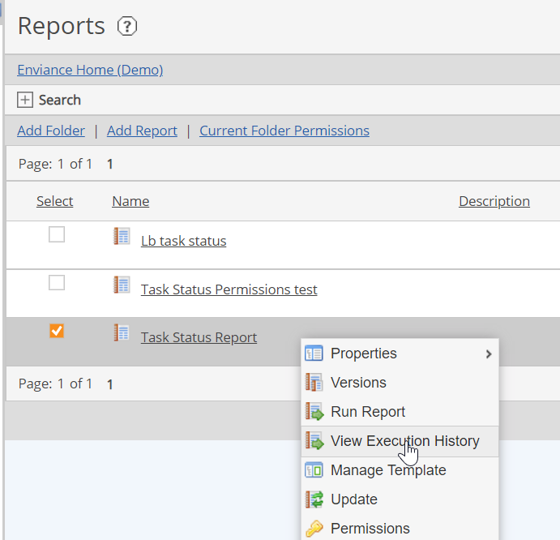
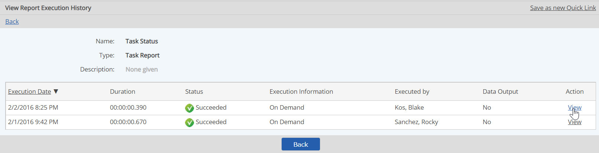
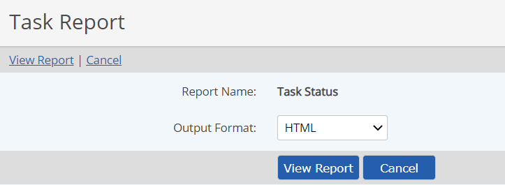

When a report in the Reports library is run (whether manually or from a scheduled execution), a cached copy is retained, up to a certain limit. The number of cached reports depends on the cache size that is set for the system (default number is 10).
You can access these cached reports and retrieve the results in the original format, or another format, as you choose. Cached reports may be retrieved in two ways:
For reports set up to run on a regular schedule, users who have been added to notifications will receive an email informing them that the report is ready for viewing. A link is available in the email that can be used to go directly to the list of cached reports (after logging into the system), where you can choose the report to view it.
Users will see only those cached reports executed by themselves, unless they have Unrestricted permission on the report, or the Manage Reports right.
To view cached reports:
Right click the report in the Reports library and select View Execution History.

The cached reports are listed.
To view a cached report, click View.

Optionally, you may change the default output format shown, if you want to view the results in a different format.
Click View Report.

If you choose HTML, the report will appear in the browser window.
If you choose Excel, you can choose whether to open the file for viewing, or save to your system first.